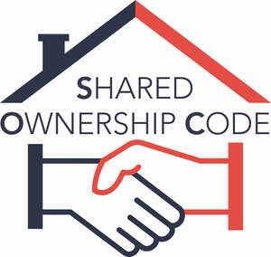
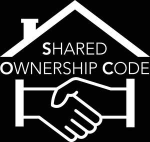
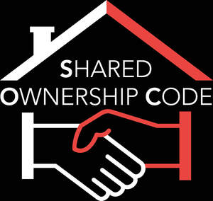

Trade Mark Journal No.2025/041 10 October 2025
UK00004269476 25 September 2025 (35,37,41,45)
Mark 1

Mark 2

Mark 3

- Class 35
- Provision of advertising space; marketing services; Advertising; Business management; Business administration; Office functions; Advertising by mail order; Compilation of information into computer databases; Direct mail advertising; Dissemination of advertising matter; Distribution of samples; Layout services for advertising purposes; Management (Advisory services for business -); Marketing research; Marketing studies; Modelling for advertising or sales promotion; On-line advertising on a computer network; Organization of exhibitions for commercial or advertising purposes; Organization of trade fairs for commercial or advertising purposes; Production of advertising films; Public relations; Publication of publicity texts; Publicity; Radio advertising; Rental of advertising space; Rental of advertising time on communication media; Television advertising; Updating of advertising material; Advertising and marketing; advertising services; online advertising and marketing services; promotional services; business monitoring and consulting services, namely, tracking users and advertising of others to provide strategy, insight, marketing guidance, and for analyzing, understanding and predicting consumer behavior and motivations, and market trends; placing advertisements and promotional displays in electronic sites accessed via computer networks.
- Class 37
- Provision of information relevant to the construction industry; Building and home construction services; building and home maintenance services; building and home alteration services; building and home improvement services; building and home installation services; building and home repair services; information, advice and consultancy services relating to all the aforesaid.
- Class 41
- Education; providing of training; entertainment; sporting and cultural activities; provision of electronic publications (not downloadable); publication services; providing on-line electronic publications; publication of electronic books, magazines, journals, texts, articles, booklets, catalogues on-line; providing publications from a global computer network or the internet which may be browsed; information relating to education and entertainment services; provision of information relating to training; arranging and conducting of conferences, seminars, exhibitions and symposiums, training courses and lectures; publishing on-line journals, namely, blogs featuring user-defined content; information, advisory and consultancy services relating to all the aforesaid.
- Class 45
- Legal advice; advice on issues of government (local and national) and political policy; Information and advisory services relating to consumer rights; Social networking services; providing a website on the internet for the purpose of social networking; advisory services relating to the preparation of standards; advisory services in relation to safety; advisory services in relation to regulatory affairs; online social networking services; information, advisory and consultancy services relating to all the aforesaid.
New Homes Quality Board Limited
Representative: Abion UK Limited